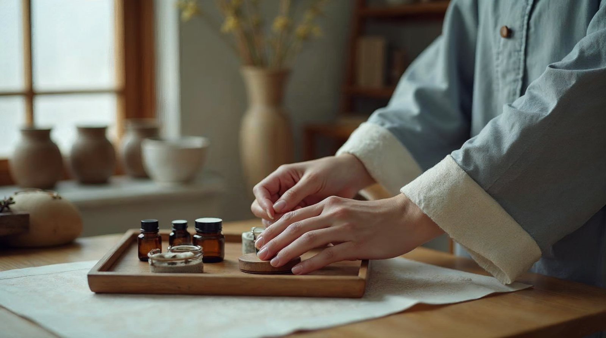
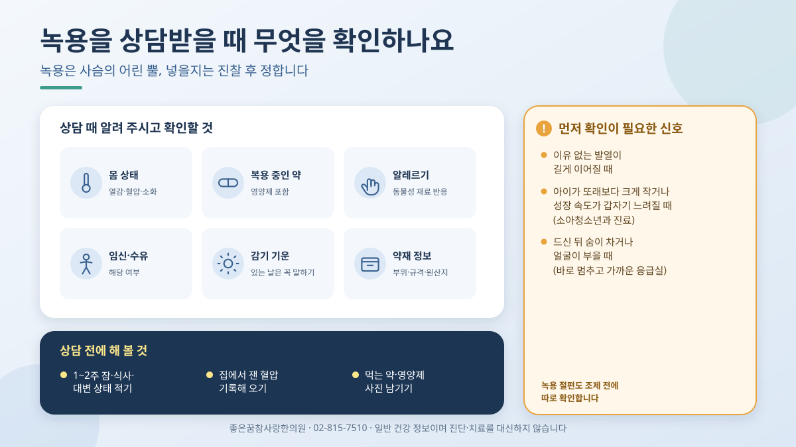

이종호 한의사 감수좋은꿈참사랑한의원 대표원장 (한의사 면허번호 19769)발행 2026-11-23 · 수정 2026-11-26
이 글의 차례
녹용은 사슴의 아직 굳지 않은 어린 뿔로, 한약 재료로 쓰이는 약재입니다. 상담 전에는 복용 중인 약과 영양제, 알레르기, 간 질환, 임신 가능성과 수유 여부, 평소 열감과 소화 상태, 혈압을 알려 주시면 됩니다.
녹용이 들어간 한약이 필요한지는 이름이 알려졌다는 이유보다 체질과 지금 몸 상태를 먼저 살핀 뒤 함께 정하며, 어떤 처방에 어떻게 넣을지도 처방한 한의사가 진찰 후 정합니다. 좋은꿈참사랑한의원에서는 녹용 절편을 조제 전에 따로 한 번 더 확인합니다.
왜 녹용도 진찰 후에 정할까요
녹용이 들어간 한약이 모든 분께 편한 것은 아닙니다.
- 평소 열이 많거나 얼굴이 잘 달아오르는 분은 열감이 더 느껴질 수 있습니다.
- 소화가 약한 분은 보하는 약재가 부담이 될 수 있습니다.
- 감기나 염증으로 열이 나는 중에는 시기를 조절하는 경우가 있습니다.
- 혈압 조절이 잘 되지 않는 분은 진찰 때 더 꼼꼼히 확인합니다.
- 피로의 이유가 잠 부족이나 끼니 거름, 빈혈·갑상선 같은 몸의 변화에 있다면 그쪽을 먼저 살펴야 하는 경우가 있습니다.
- 복용 중인 약과 간·신장 상태에 따라 처방을 더 조심스럽게 정합니다.
먼저 이렇게 여쭙니다
- 피로가 언제부터, 어떤 일 뒤에 시작되었나요?
- 평소 열이 많거나 혈압이 높은 편인가요?
- 소화는 편한가요?
- 동물성 재료에 알레르기 반응을 보인 적이 있나요?
- 임신 가능성이 있거나 수유 중인가요? 복용 중인 약과 영양제, 간 질환이 있나요?
- 예전에 녹용이 든 한약을 드신 적이 있나요? 그때 열감이나 속 불편은 없었나요?
상담 전에 확인하면 좋은 것
- 몸 상태: 열이 많거나 혈압이 높은지, 소화가 약한지
- 복용 중인 약: 영양제 포함
- 알레르기: 동물성 재료에 반응한 적이 있는지
- 약재 정보: 어떤 처방에 넣는지, 녹용 절편은 어떻게 확인하는지 설명을 들을 수 있는지
- 일정: 가까운 시일 안에 수술, 내시경, 치과 치료가 예정되어 있는지
상황별 예시
- 예를 들어 평소 얼굴이 잘 달아오르고 더위를 많이 타는 직장인이라면, 녹용을 넣을지 정하기 전에 열감이 언제 심해지는지, 잠과 대변은 어떤지 먼저 여쭙습니다. 몸에 열이 많은 편이라면 녹용 없이 처방을 정하거나 시기를 다시 상의할 수 있습니다.
- 예를 들어 출산과 육아로 잠이 쪼개진 분이라면, 수유 여부를 먼저 확인하고 잠과 식사, 산후 몸 상태를 함께 살핍니다. 수유 중에는 약재마다 안전성을 따로 따져 신중하게 정합니다.
- 예를 들어 혈압약을 드시는 어르신이라면, 집에서 잰 혈압 기록과 약 이름을 함께 보며 진찰 때 더 꼼꼼히 확인합니다. 혈압약은 처방한 의사와 상의 없이 줄이거나 끊지 않습니다.
스스로 점검해 보세요
- 얼굴이 잘 달아오르거나 더위를 많이 탄다
- 식사 뒤 더부룩하거나 대변이 자주 묽다
- 혈압이 높다는 이야기를 들었거나 혈압약을 드신다
- 감기 기운이나 열이 있는 중이다
- 동물성 재료나 특정 음식에 알레르기가 있다
- 임신 중이거나 수유 중이거나 임신을 계획 중이다
- 예전에 녹용이 든 한약을 드시고 열감이나 속 불편이 있었다
해당하는 항목은 상담 때 말씀해 주세요. 녹용이 필요한지, 시기를 늦출지 정하는 바탕이 됩니다.
일상에서 먼저 해 볼 수 있는 것
- 상담 전 1~2주 동안의 잠과 식사, 대변 상태 적어 두기
- 집에서 잰 혈압이 있다면 기록해 오기
- 복용 중인 약과 영양제를 사진으로 남기기
- 감기 기운이 있는 날은 상담 때 꼭 말씀하기
- 열감이 오르는 시간대와 그때 한 일을 메모해 두기
아이의 경우
아이는 나이와 체격, 식욕, 평소 건강 상태가 달라서 진찰 후 처방 여부를 정합니다. 보호자가 아이의 병력과 복용 중인 약을 정리해 오시면 상담이 수월합니다.
아이도 녹용을 넣을지보다 식사와 잠, 활동량, 자주 앓는 병이 있는지를 먼저 살핍니다. 키와 몸무게가 또래와 크게 다르거나 성장 속도가 갑자기 달라졌다면 소아청소년과 진료와 검사가 먼저입니다.
얼마나 지켜보고 언제 상담할까요
녹용이 들어간 한약을 드시기 시작하면 첫 며칠 동안 얼굴이 달아오르거나 잠이 얕아지지 않는지, 속이 편한지, 대변이 어떤지 한 줄씩 적어 두세요. 가벼운 열감이나 더부룩함은 이삼일 지켜보며 기록하되, 사흘 넘게 이어지거나 점점 심해지면 다음 진료를 기다리지 말고 전화로 알려 주세요.
감기에 걸려 열이 나기 시작하면 이어서 드셔도 되는지 먼저 한의원에 여쭤 주세요. 대개 보름 정도 드신 뒤 몸의 반응을 다시 확인하며 이어 갈지 함께 정합니다.

한의원에서 함께 살필 수 있는 경우
- 녹용이 들어간 한약이 내 몸에 맞는지 상담받고 싶은 경우
- 예전에 녹용이 든 한약을 드시고 열감이나 속 불편이 있었던 경우
- 아이에게 맞는지 보호자가 함께 상담하고 싶은 경우
좋은꿈참사랑한의원에서는 먼저 몸 상태와 생활을 충분히 듣고, 진맥·설진·복진으로 살핀 뒤 녹용이 필요한지, 필요하다면 어떤 처방이 맞는지 정합니다. 한약은 원내에서 달이며 대표원장이 약재를 직접 검수합니다.
첫 방문에는 녹용을 생각하게 된 이유와 피로의 모습, 잠·식사·대소변, 복용 중인 약을 먼저 여쭙고 맥부터 짚어 봅니다. 필요하다고 판단될 때 혀와 배를 살피고, 집에서 잰 혈압 기록이나 건강검진 결과지가 있으면 함께 봅니다. 이렇게 살핀 뒤 녹용이 필요한지, 녹용 없이 처방을 정하는 쪽이 맞는지, 생활 조정이 먼저인지 설명드립니다.
이렇게 기록해 오시면 상담이 쉬워집니다
- 평소 열감, 땀, 소화 상태
- 집에서 잰 혈압(있다면)
- 예전에 드신 한약(녹용 포함)과 그때의 반응
- 아이라면 키·몸무게 변화와 먹고 있는 약
- 복용 중인 약과 영양제 이름(약 봉투 사진도 좋습니다)
이런 증상은 먼저 확인이 필요합니다
- 혈압이 크게 높으면서 심한 두통이나 가슴 통증, 말이 어눌하거나 한쪽 팔다리에 힘이 빠지는 경우(가까운 응급실)
- 드신 뒤 숨이 차거나 얼굴·입술이 붓는 경우(바로 복용을 멈추고 가까운 응급실)
이런 신호가 있으면 한의원보다 가까운 병원이나 응급실을 먼저 찾으세요.
함께 읽으면 좋은 글
- 같은 병인데 한약 처방이 사람마다 다른 이유는 무엇인가요?
- 환 형태의 한약(공진단)을 상담받기 전에 무엇을 알려야 하나요?
- 혈압약이나 당뇨약을 먹고 있는데 한약을 함께 먹어도 되는지 어떻게 확인하나요?

여쭙는 것
- 피로가 언제부터, 어떤 일 뒤에 시작되었나요?
- 평소 열이 많거나 혈압이 높은 편인가요?
- 소화는 편한가요?
생활에서 해 볼 것
- 상담 전 1~2주 동안의 잠과 식사, 대변 상태 적어 두기
- 집에서 잰 혈압이 있다면 기록해 오기
- 복용 중인 약과 영양제를 사진으로 남기기
한의원에서 함께 살필 것
- 녹용이 들어간 한약이 내 몸에 맞는지 상담받고 싶은 경우
- 예전에 녹용이 든 한약을 드시고 열감이나 속 불편이 있었던 경우
- 아이에게 맞는지 보호자가 함께 상담하고 싶은 경우
먼저 확인이 필요한 신호
- 혈압이 크게 높으면서 심한 두통이나 가슴 통증, 말이 어눌하거나 한쪽 팔다리에 힘이…
- 드신 뒤 숨이 차거나 얼굴·입술이 붓는 경우(바로 복용을 멈추고 가까운 응급실)
한눈에 보는 표
| 구분 | 핵심 |
|---|---|
| 여쭙는 것 | 피로가 언제부터, 어떤 일 뒤에 시작되었나요? 평소 열이 많거나 혈압이 높은 편인가요? |
| 생활에서 해 볼 것 | 상담 전 1~2주 동안의 잠과 식사, 대변 상태 적어 두기 집에서 잰 혈압이 있다면 기록해 오기 |
| 한의원에서 함께 살필 것 | 녹용이 들어간 한약이 내 몸에 맞는지 상담받고 싶은 경우 예전에 녹용이 든 한약을 드시고 열감이나 속 불편이 있었던 경우 |
| 먼저 확인이 필요한 신호 | 혈압이 크게 높으면서 심한 두통이나 가슴 통증, 말이 어눌하거나 한쪽 팔다리에 힘이 빠지는 경우(가까운 응급실) 드신 뒤 숨이 차거나 얼굴·입술이 붓는 경우(바로 복용을 멈추고 가까운 응급실) |
자주 묻는 질문
녹용 상담 때 무엇을 알려야 하나요?
복용 중인 약과 영양제, 알레르기, 간 질환, 임신 가능성과 수유 여부, 평소 열감과 소화 상태를 알려 주세요.
어른도 상담받을 수 있나요?
네. 체질과 지금 몸 상태를 살핀 뒤 녹용이 필요한지 함께 정합니다.
녹용을 직접 볼 수 있나요?
조제 전에 확인하는 녹용 절편 사진을 원내 탕전 기록에서 보실 수 있습니다.
열이 많은 체질이면 녹용을 먹을 수 없나요?
한 가지로 정하지 않습니다. 열감의 모습과 소화, 혈압을 함께 살펴 녹용을 넣을지, 넣지 않고 처방할지, 시기를 늦출지 상의합니다.
좋은꿈참사랑한의원은 재진 때 지난번 이야기부터 이어서 여쭙니다. 진료시간과 예약은 오시는 길에서 확인하세요.
어디서 상담받을 수 있나요?
좋은꿈참사랑한의원은 서울 동작구 만양로2길 2 신성빌딩 3층·5층(서울 동작구 상도동, 7호선 상도역 3번 출구 근처)에 있습니다. 한의사 3명(이종호 대표원장, 조영기 수석진료원장, 정원영 진료원장)이 진료합니다. 진료시간은 평일 09:30~20:00(점심 13:00~14:00), 토·일·공휴일 09:30~15:00이며, 방문 전 전화로 확인을 권합니다. 예약은 네이버 예약, 카카오톡 상담, 전화 02-815-7510로 받습니다.
이 글은 일반적인 건강 정보이며 개인의 진단이나 치료를 대신하지 않습니다. 증상이 있거나 복용 중인 약이 있다면 진료를 통해 확인하세요. 치료 효과는 개인마다 다를 수 있습니다.
작성 기준: 일반적으로 알려져 있는 건강 정보를 참고해 정리했습니다(대표원장 감수). 증상 기록은 1~2주 동안 하루 1회, 비슷한 시간에 적어 오시면 지난 상태와 비교하기 쉽습니다.